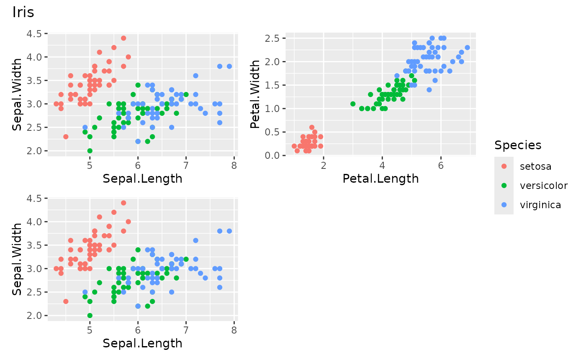
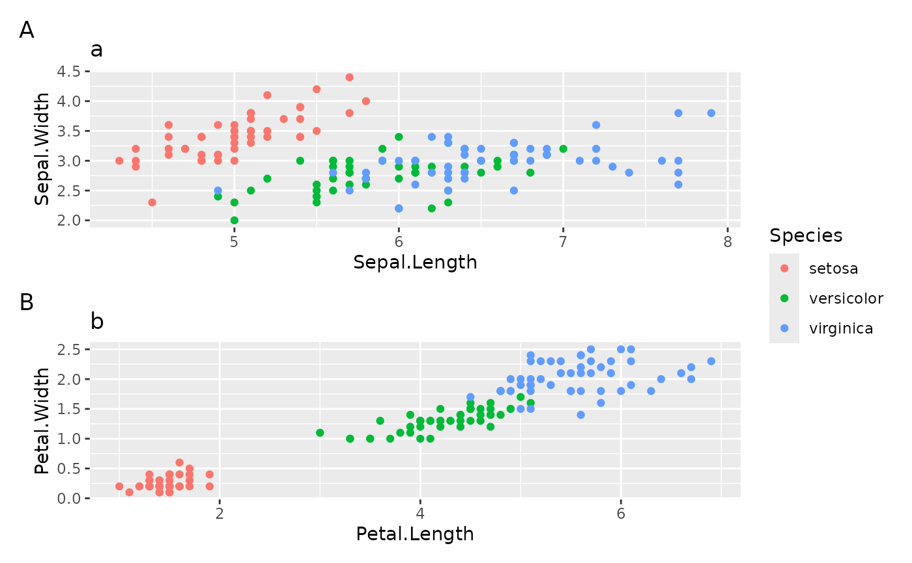

kgg_grid() arranges several plots in a grid. Plots can be given one by
one, as lists (possibly nested), or both. kggplot() objects, regular
ggplot objects and other kgg_grid objects are accepted. By default the
grid is as square as possible (see kgg_grid_dims()) and identical legends
are merged into a single one, as in a facet.
Arguments
- ...
Plots (
kggplot,ggplot,kgg_grid) or lists of plots. Names become the title of each cell (seetitles).- nrow, ncol
Number of rows and columns. Leave both
NULLfor the most square grid; give one and the other is deduced; give both to force the grid. The number of plots must fit in the grid (error otherwise) and a grid with entirely empty rows or columns triggers a warning (an error whenstrict = TRUE).- ratio
Target width/height ratio of the grid when
nrowandncolare not given (1 = square, 16/9 = wide).- byrow
Fill the grid by row (
TRUE, default) or by column.- legend
"collect"(default) merges the legends of all plots into one shared legend,"each"keeps one legend per plot,"none"removes every legend.- legend_position
Position of the shared legend (
"right","bottom","left","top").- titles
Use the names of the plots as cell titles?
NULL(default) does so when at least one plot is named.- title, subtitle, caption
Overall annotations of the grid.
Panel tags:
NULLfor none, or"A","a","1","I","i"to number the cells.- widths, heights
Relative widths of the columns and heights of the rows.
- strict
Turn the warning about empty rows or columns into an error.
Value
A kgg_grid, printed as a patchwork; convert it with
as_ggplot(). Add plots with +.
Examples
a <- kggplot(iris, "Sepal.Length", "Sepal.Width", color = "Species")
b <- kggplot(iris, "Petal.Length", "Petal.Width", color = "Species")
kgg_grid(a, b, a, title = "Iris")

kgg_grid(list(a = a, b = b), ncol = 1, tags = "A")

kgg_grid_dims(7)
#> $nrow
#> [1] 3
#>
#> $ncol
#> [1] 3
#>